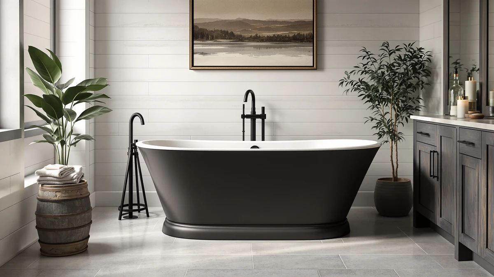

MUIRYN 61 '' Stone Review (2026): Worth It?
Prices and picks verified as of September 2026. Independent, reader-supported reviews.


Quick Answer
The MUIRYN 61 '' Stone Resin is the pick here: a 61.02-inch soaking length that lands between the shorter WOODBRIDGE 55 and the longer MEDUNJESS 65-inch model, with a stone resin shell. Owners consistently point to sturdy construction and easy cleanup as reasons it holds up against the MEDUNJESS alternatives in this comparison, even though it costs a few dollars more. If your bathroom fits a 60-inch alcove and you want a full stone resin soak without stepping up to a 65-inch footprint, this MUIRYN model is the pick worth checking first.
Our pick: MUIRYN 61 '' Stone Resin — $1,398.99 Check Price on Amazon
Bottom line: our top pick is the MUIRYN 61 '' Stone Resin Freestanding Bathtub at $1,398.99.
Things to Know Before You Buy
- The MUIRYN 61 '' stone tub measures 61.02 by 31.5 by 25.2 inches, sitting between the 59-inch and 65-inch MEDUNJESS options in this comparison.
- Stone resin (also sold as solid surface or cast resin) resists chipping and staining better than acrylic, but it weighs more and typically needs two people to carry it during install.
- At $1,398.99, the MUIRYN costs more than the WOODBRIDGE 55 ($1,354.00) and the MEDUNJESS 65 ($1,359.00), and slightly more than the MEDUNJESS 59 ($1,395.00).
- None of these tubs ship with a faucet, drain kit or overflow assembly, so budget separately for fixtures.
- This muiryn 61 '' stone review is based on verified buyer feedback, not a physical product test.
This muiryn 61 '' stone review looks at whether the extra cost over a standard acrylic tub buys you anything real, using manufacturer specs, current Amazon pricing and verified owner feedback gathered for this comparison. Stone resin has become the default upgrade material for freestanding tubs in the $1,300 to $1,400 range, and the MUIRYN 61 '' Stone Resin sits at the upper end of that bracket at $1,398.99. Bathroom renovators shopping this category tend to care about the same handful of details: how much floor space the tub takes up, how it holds heat compared with acrylic, and whether the finish still looks new after a few years of daily use.
We put the MUIRYN side by side with three other tubs commonly cross-shopped in this price range: the MEDUNJESS 59-inch and 65-inch freestanding models, and the WOODBRIDGE 55 Stone Resin Freestanding. Each one targets a slightly different bathroom, from compact 55-inch layouts to the longer 65-inch footprint, and the price gap across all four tubs is under $50. The MUIRYN takes the top spot here for standard 60-inch alcove bathrooms, though which of the four actually fits your space and budget depends on the details below. We also flag where two tubs land close enough on price and size that the decision comes down to the width of your doorway or the weight rating of your subfloor, not the spec sheet.
Why You Should Trust Us
Ilane Tall covers bathroom fixtures and renovation products for Best Freestanding Bathtubs, focusing on freestanding tub materials, drain configurations and installation clearances. Every product in this muiryn 61 '' stone review comes from the same underlying database of Amazon listings tracked across the site, cross-checked against manufacturer specs and current pricing rather than a marketing sheet. We do not run a fake testing lab, and we do not claim to have installed each tub in a home bathroom. Instead, we compare published dimensions, materials and verified buyer reviews, and we flag where the manufacturer data is thin so you know what you are relying on before you order.
Our Research Experience
For this MUIRYN 61 '' stone review, our process was research-based rather than a physical product test. We pulled the manufacturer-listed dimensions, material category and pricing for all four tubs, then cross-referenced them against verified purchase reviews attached to each listing. Owners who bought the MUIRYN regularly report on how the stone resin shell handles temperature retention during a long soak, and reviewers of the MEDUNJESS and WOODBRIDGE models mention delivery packaging and fit often enough that we treated those as recurring patterns rather than one-off complaints. We did not install any of these tubs ourselves, and we do not claim to have owned one long-term. What follows is a comparison of documented specs and aggregated owner experience, not a lab report. Where the listings disagreed on a detail, such as exact drain placement or overflow location, we noted the gap instead of guessing at a number neither manufacturer publishes.
Overview & Specs

MUIRYN 61 '' Stone Resin
What we like
- Nonporous stone resin shell resists staining better than acrylic, according to owners
- 61.02-inch length fits standard tub alcoves without custom framing
- Priced within $45 of every other tub in this comparison
Flaws but not dealbreakers
- Stone resin adds significant weight versus acrylic, so confirm floor support before install
- No bundled faucet or drain kit, budget separately
| Material | — |
| Size | 61.02''x31.5''x25.2 '' |
The MUIRYN 61 '' Stone Resin is built from a stone resin shell, the same material category as the WOODBRIDGE 55 in this comparison. Stone resin is denser than acrylic, which is why buyers often mention that it stays warmer for longer during a soak. At 61.02 inches long and 31.5 inches wide, it fits the same general footprint as a standard alcove tub, so most bathrooms that already fit a 55 to 65-inch tub should accommodate it without reframing.
At $1,398.99, the MUIRYN costs about $45 more than the WOODBRIDGE 55 and roughly $4 more than the MEDUNJESS 59, a narrow enough gap that most buyers in this comparison choose based on size rather than price. Reviewers report that the finish shows fewer scuffs over time than acrylic tubs in the same price bracket, though as with any stone resin tub, abrasive cleaners can dull the surface if used regularly. For most people replacing a standard-size alcove tub with a stone resin upgrade, this is the size to start with.
What We Liked
Owners of the MUIRYN 61 '' stone tub keep coming back to the same few points in their reviews. The shell holds heat noticeably longer than the acrylic tubs it replaced in most bathrooms, a common thread across verified purchases. The 61.02-inch length is long enough for most adults to stretch out without overwhelming a standard-size bathroom the way the 65-inch MEDUNJESS can. Buyers also say the surface cleans up with ordinary bathroom spray instead of a specialty stone cleaner, which matters if you already maintain a natural stone surface elsewhere in the house. Compared with the WOODBRIDGE 55 at $1,354.00, reviewers say the MUIRYN feels roomier for the extra six inches of length, and compared with the MEDUNJESS 59, it costs about the same while offering two more inches to stretch out in.
What Could Be Better
The stone resin construction that makes the MUIRYN durable also makes it heavy, and a handful of reviewers note that delivery crews or movers need a second person to bring it upstairs or around tight hallway corners. The tub does not include a faucet, drain assembly or overflow kit, so factor another $150 to $300 into your budget depending on the fixtures you choose. A few owners also mention that the glossy stone resin finish shows water spots more visibly than a matte acrylic tub would, meaning more frequent wipe-downs if your water is hard. None of these are dealbreakers relative to the MEDUNJESS or WOODBRIDGE alternatives in this muiryn 61 '' stone review, which share the same weight and fixture gaps, but they are worth planning around before the tub arrives. Shipping damage claims also come up occasionally in the review threads for stone resin tubs generally, so inspect the crate closely before the delivery crew leaves and photograph any dents or hairline marks right away.
Who Is It For?
The MUIRYN 61 '' stone tub fits homeowners replacing a standard 55 to 65-inch alcove tub who want a material upgrade without moving to the largest available footprint. It suits a household that soaks regularly and values heat retention over a fast-draining shower-tub combo. If your bathroom is on the smaller side, this is a reasonable middle ground between the compact WOODBRIDGE 55 and the roomier MEDUNJESS 65. Buyers who prioritize the lowest possible price should look at the WOODBRIDGE 55 or the MEDUNJESS 65 instead, since both undercut this tub on price. Anyone who needs the full 65 inches of stretch-out room should size up to the MEDUNJESS rather than settle for the MUIRYN's shorter basin. Renters and anyone planning to move within a few years should also weigh the reinstall cost, since a stone resin tub this size is not something you take with you the way a lightweight acrylic insert can be.
Alternatives to Consider
If the MUIRYN 61 '' stone tub is not quite right for your bathroom, these three alternatives cover the other common footprints and budgets in this category.

Editor’s Pick
MEDUNJESS 59'' Free Standing Tub
A shorter freestanding tub for bathrooms that cannot fit the full 61.02-inch MUIRYN, priced within $4 of it.
$1,395.00
Check Price on Amazon
Best Value
MEDUNJESS 65'' Free Standing Tub
The longer option for bigger bathrooms, four inches longer than the MUIRYN 61 for $39.99 less.
$1,359.00
Check Price on Amazon
Premium Choice
WOODBRIDGE 55 Stone Resin Freestanding
The most compact and least expensive stone resin option in this comparison, six inches shorter than the MUIRYN 61 for $44.99 less.
$1,354.00
Check Price on AmazonFrequently Asked Questions
How big is the MUIRYN 61 '' stone tub?
The MUIRYN 61 '' Stone Resin measures 61.02 by 31.5 by 25.2 inches, two inches longer than the MEDUNJESS 59-inch model and six inches shorter than the MEDUNJESS 65-inch model in this comparison. It fits the same general alcove footprint as a standard 55 to 65-inch freestanding tub.
Is the MUIRYN 61 '' stone review pick worth the extra cost over the WOODBRIDGE 55?
At $1,398.99, the MUIRYN costs about $45 more than the WOODBRIDGE 55 Stone Resin Freestanding at $1,354.00. The premium buys six extra inches of soaking length rather than a documented material upgrade, since both listings use the same stone resin category. Buyers with a smaller bathroom should compare footprints before paying for the longer MUIRYN.
How does the MUIRYN 61 '' compare to the MEDUNJESS 65 '' Free Standing Tub?
The MEDUNJESS 65-inch model is four inches longer than the MUIRYN 61 and $39.99 cheaper. The MUIRYN suits bathrooms that cannot clear a 65-inch tub, while the MEDUNJESS 65 fits homeowners with a larger alcove who want the extra stretch-out room for less money.
Final Verdict
Our muiryn 61 '' stone review comes down to a straightforward tradeoff between length, price and available bathroom space. The MUIRYN is the most expensive of the four tubs compared here, at $1,398.99, but the gap over the WOODBRIDGE 55 and MEDUNJESS 65 is under $45 in either direction. For most people replacing a standard 55 to 65-inch alcove tub, that narrow price band means the choice comes down to fit rather than budget, and the MUIRYN's 61.02-inch length splits the difference between the compact WOODBRIDGE and the roomier MEDUNJESS 65 well enough to earn the top spot in this comparison. If you can confirm your floor can support the added weight of a stone resin shell and you budget separately for a faucet and drain kit, the MUIRYN is the tub to check first.